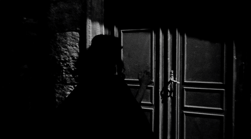

Λίγα λόγια...
Το ιταλικό κινηματογραφικό είδος ''Τζάλο'' ή αλλιώς όπως είναι γνωστό διεθνώς giallo all' italiana ή spaghetti thriller είναι ένα αστυνομικό κινηματογραφικό είδος που ξεκίνησε στην Ιταλία στα μέσα της δεκαετίας του 60' για να τελειοποιηθεί και να εξελιχθεί την επόμενη δεκαετία ως ένα από τα πλέον αναγνωρισμένα και καθιερωμένα στο χώρο της έβδομης τέχνης κινηματογραφικά είδη. Στα μέσα της δεκαετίας του 60' το αστυνομικό θρίλερ ''τζάλο'' εξελίσσεται σε τέτοιο βαθμό στην Ιταλία ώστε να αγνοφαίνονται ήδη τόσο τα χαρακτηριστικά του όσο και ο διαχωρισμός του από το αστυνομικό θρίλερ όπως το γνωρίζαμε μέχρι τότε. Εκείνη την εποχή οι ταινίες τρόμου εμπεριείχαν γοτθικά στοιχεία και σκηνικά προσδίδοντας στην σκηνοθεσία έναν τόνο σουρεαλισμού και ονείρου. Ήταν η περίοδος όπου τα σενάρια διαδραματίζονταν σε μεσαιωνικά κάστρα της Ιταλίας, εκεί όπου λάμβαναν χώρα το μυστήριο και οι δολοφονίες. Ή έννοια του ''killer'' ήταν για αυτόν τον λόγο καθαρά συνδεδεμένη μ' έναν δολοφόνο που δρούσε σε πιο στενό και κλειστό περιβάλλον, εκείνο μια μυθικής έπαυλης ή ενός μεσαιωνικού - γοτθικού κάστρου. Σε αντίθεση με τις ''horror'' ταινίες, το ''τζάλο'' άλλαξε τον τρόπο με τον οποίο προβάλλεται ο τρόμος, ο φόβος και το ίδιο το έγκλημα στον θεατή. Ο σουρεαλισμός δίνει την θέση του στον ρεαλισμό και η σκηνή μεταφέρεται πλέον από την μουντή και συννεφιασμένη ατμόσφαιρα της ιταλικής επαρχίας με τα κάστρα στην αστική ύπαιθρο των πολυκατοικιών. Η πλοκή της ταινίας δεν μοιάζει πια ονειρική αλλά αληθινή και οικεία, τόσο οικεία που ο θεατής καθηλώνεται στην είδηση του φόνου από τα πρωτοσέλιδα των εφημερίδων. Η σκηνοθεσία διακατέχεται από τέτοιο ρεαλισμό τόσο στην στιγμή του φόνου όσο και στις κινήσεις του ίδιου του δολοφόνου που ο θεατής έχει την εντύπωση ότι βρίσκεται μέσα στην σκηνή. Το cast των ηθοποιών συνήθως απαρτίζεται από καλλονές και γόηδες, ενώ τα πρόσωπα είναι συνήθως της αριστοκρατικής κοινωνίας με ιδιαίτερα καπρίτσια και οι σκηνές διαδραματίζονται είτε σε εξωτικές βίλες προαστίων είτε σε πυκνοκατοικημένες περιοχές των ιταλικών πόλεων. Στην δεκαετία του 70', ήδη από τα τέλη του 60', το ''τζάλο'' υιοθετεί όλο και περισσότερο το ερωτικό στοιχείο στην σκηνοθεσία προβάλλοντας έτσι σκηνές γυμνού και σεξ την στιγμή του φόνου ή του αποτρόπαιου εγκλήματος. Η αιματοχυσία είναι επιπλέον ένα από τα χαρακτηριστικά του είδους, περισσότερο όμως στην δεκαετία του 70', όπου τα εγκλήματα γίνονται όλο και πιο βίαια. Κατά την δεκαετία του 70' το ''τζάλο'' εξελίσσεται ως ένα ερωτικό και συγχρόνως ψυχολογικό αστυνομικό θρίλερ. Ο σκηνοθέτης πλέον εστιάζει την προσοχή του θεατή στην προετοιμασία του φόνου, και στην ίδια την φιγούρα του δολοφόνου. Πρόκειται για μια φιγούρα εγκληματική, έναν συνήθως ψυχοπαθή δολοφόνο με ψυχικά τραύματα από το παρελθόν, ο οποίος καταφέρνει να ''ξεγελά'' τον θεατή και να μην κινεί υποψίες. Τα θύματα του συνήθως όμορφες νεαρές υπάρξεις, οι οποίες βρίσκουν φρικτό θάνατο σε στιγμή συνήθως απρόσμενη. Σκοπός της σκηνοθεσίας είναι να δώσει την εντύπωση στον θεατή, ότι και ο ίδιος συμμετέχει στο έγκλημα διαμέσου της οπτικής εικόνας του δολοφόνου. Η κάμερα κινείται με τέτοιο τρόπο ώστε ο θεατής να αντικρίζει το ίδιο το έγκλημα που διαπράττεται από τον δολοφόνο, σαν να το διαπράττει εκείνος. Το αποτέλεσμα είναι ο θεατής και συνάμα ο δολοφόνος να είναι ο πρωταγωνιστής. Σημαντικό ρόλο κατέχει και η μουσική επένδυση η οποία είναι εκφραστική και ασυνήθιστη.
